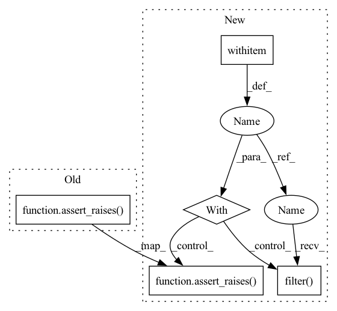

Pattern ID :21947

Before Change
iy = np.linspace(-1, 3, 33)
b = interp2d(x, y, z, bounds_error=True)
assert_raises(ValueError, b, ix, iy)
b = interp2d(x, y, z, fill_value=np.nan)
iz = b(ix, iy)
mx = (ix < 0) | (ix > 1)
After Change
ix = np.linspace(-1, 3, 31)
iy = np.linspace(-1, 3, 33)
with suppress_warnings() as sup:
sup.filter(DeprecationWarning)
b = interp2d(x, y, z, bounds_error=True)
assert_raises(ValueError, b, ix, iy)
b = interp2d(x, y, z, fill_value=np.nan)
iz = b(ix, iy)
mx = (ix < 0) | (ix > 1)
In pattern: SUPERPATTERN
Frequency: 3
Non-data size: 5
Instances
Fragment ID: 69786852
Project Name: scipy/scipy
Commit Name: b4eb1a1e87d8f8fbc9b9bb226f01a1b16f59f4b0
Time: 2022-11-06
Author: evgeny.burovskiy@gmail.com
File Name: scipy/interpolate/tests/test_interpolate.py
M Class Name: TestInterp2D
N Class Name: TestInterp2D
M Method Name: test_interp2d_bounds(1)
N Method Name: test_interp2d_bounds(1)
M Parent Class:
N Parent Class:
M File Name: scipy/interpolate/tests/test_interpolate.py
N File Name: scipy/interpolate/tests/test_interpolate.py
M Start Line: 94
M End Line: 103
N Start Line: 105
N End Line: 119
'>
Before Change
ye = np.array([5.3, 7.1])
assert_allclose(func(xe, ye), func(xe, ye[::-1]))
assert_raises(ValueError, func, xe, ye[::-1], 0, 0, True)
def test_interp2d_linear(self):
// Ticket /묚
a = np.zeros([5, 5])
After Change
def test_interp2d_eval_unsorted(self):
y, x = mgrid[0:2:20j, 0:pi:21j]
z = sin(x + 0.5*y)
with suppress_warnings() as sup:
sup.filter(DeprecationWarning)
func = interp2d(x, y, z)
xe = np.array([3, 4, 5])
ye = np.array([5.3, 7.1])
assert_allclose(func(xe, ye), func(xe, ye[::-1]))
assert_raises(ValueError, func, xe, ye[::-1], 0, 0, True)
def test_interp2d_linear(self):
// Ticket /묚
a = np.zeros([5, 5])
'>
Fragment ID: 69786853
Project Name: scipy/scipy
Commit Name: b4eb1a1e87d8f8fbc9b9bb226f01a1b16f59f4b0
Time: 2022-11-06
Author: evgeny.burovskiy@gmail.com
File Name: scipy/interpolate/tests/test_interpolate.py
M Class Name: TestInterp2D
N Class Name: TestInterp2D
M Method Name: test_interp2d_eval_unsorted(1)
N Method Name: test_interp2d_eval_unsorted(1)
M Parent Class:
N Parent Class:
M File Name: scipy/interpolate/tests/test_interpolate.py
N File Name: scipy/interpolate/tests/test_interpolate.py
M Start Line: 69
M End Line: 75
N Start Line: 76
N End Line: 86
'>
Before Change
// 2D array not allowed.
assert_raises(ValueError, firwin, 99, [[0.1, 0.2],[0.3, 0.4]])
// cutoff values must be less than nyq.
assert_raises(ValueError, firwin, 99, 50.0, nyq=40)
assert_raises(ValueError, firwin, 99, [10, 20, 30], nyq=25)
assert_raises(ValueError, firwin, 99, 50.0, fs=80)
assert_raises(ValueError, firwin, 99, [10, 20, 30], fs=50)
After Change
// 2D array not allowed.
assert_raises(ValueError, firwin, 99, [[0.1, 0.2],[0.3, 0.4]])
// cutoff values must be less than nyq.
with np.testing.suppress_warnings() as sup:
sup.filter(DeprecationWarning, "Keyword argument "nyq"")
assert_raises(ValueError, firwin, 99, 50.0, nyq=40)
assert_raises(ValueError, firwin, 99, [10, 20, 30], nyq=25)
assert_raises(ValueError, firwin, 99, 50.0, fs=80)
assert_raises(ValueError, firwin, 99, [10, 20, 30], fs=50)
'>
Fragment ID: 69786854
Project Name: scipy/scipy
Commit Name: 26948496a54604a6f0438c694437d5783c064589
Time: 2022-06-07
Author: 60778417+j-bowhay@users.noreply.github.com
File Name: scipy/signal/tests/test_fir_filter_design.py
M Class Name: TestFirWinMore
N Class Name: TestFirWinMore
M Method Name: test_bad_cutoff(1)
N Method Name: test_bad_cutoff(1)
M Parent Class:
N Parent Class:
M File Name: scipy/signal/tests/test_fir_filter_design.py
N File Name: scipy/signal/tests/test_fir_filter_design.py
M Start Line: 250
M End Line: 251
N Start Line: 251
N End Line: 255